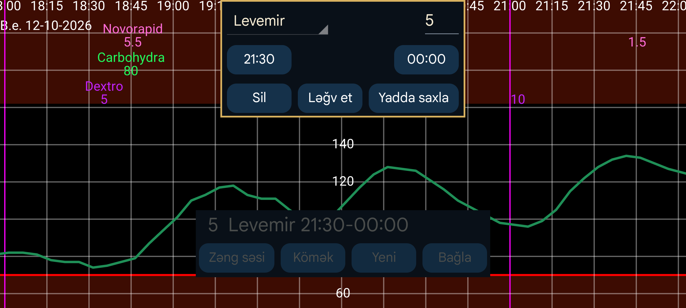

ar az be de es fa fr hi it ja ko nl pl pt ru tr uk uz zh en
Xatırlatmalar göstərilən vaxt aralığında müəyyən etiket üzrə tələb olunan minimum Miqdarı daxil etməmisinizsə, bunu sizə bildirir.
Yeni xatırlatma əlavə etmək üçün Yeni düyməsini basın.
Göstərilən etiketlə tələb olunan miqdarı daxil etməli olduğunuz müddətin başlanğıc və bitmə vaxtını təyin edin.
Bitmə vaxtında proqram həmin etiketlə başlanğıc vaxtından bəri ən azı göstərilən miqdarın qeyd olunub-olunmadığını yoxlayır. Qeyd yoxdursa, bildiriş göstərilir və siqnal səsi çalınır.
Məsələn, belə təyin etmisinizsə:
Levemir 6.0
21:30–23:55
Həmin gün saat 21:30-dan sonra ən azı 6 vahid Levemir qeyd etməmisinizsə, 23:55-dən sonra xatırlatma alacaqsınız.
Mövcud xatırlatmalar siyahıda göstərilir. Dəyişdirmək üçün xatırlatmaya toxunun.
Normal şəraitdə Android yenidən başladıldıqdan sonra da Juggluco-nu əl ilə açmadan xatırlatmalar işləməlidir.
Bəzi Huawei qurğularında proqramın cihaz açılarkən avtomatik başlamasına ayrıca icazə vermək tələb olunur. Bunun üçün Android Tənzimləmələri → Batareya → Tətbiqin işə salınması bölməsində Juggluco üçün Əl ilə idarə et seçin və Avtomatik başlatma ilə Arxa planda işləmə seçimlərini aktiv edin. Bu, yenidən başlatmadan sonra Juggluco-nu açmadan siqnal itkisi xəbərdarlıqlarının işləməsi üçün də lazımdır.